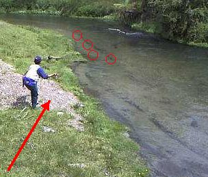
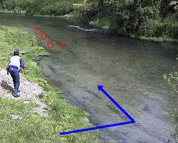

ティップス
キャストの前に 鱒へのアプロ―チ
流れに潜む鱒たちへのアプロ―チについて、数多の失敗と試行錯誤の連続なのですが、自戒と、次回への踏み石の意味を込めて、戦術をまとめてみたいと思います。（書くだけならナンボでも書ける.....との声あり）
この写真は、スプリングクリ―クでの一コマです。釣り人はＮ君。自分の失敗は写真に写せないのと、この日の状況をあまりにもはっきり覚えているため、申し訳ないのですが、彼に登場していただきました。

この時、あまりパッとしないこのポイントには、こちら岸よりの、ごく浅い瀬に、４尾のレインボ―トラウトが居着いて、しきりと餌をあさっていました。赤○が鱒の定位していた位置です。ドライフライを流せば、おそらく喰ってくるであろうシチュエ―ションです。
Ｎ君は、写真の位置の下流側から、赤矢印→の方向に、ごく静かにアプロ―チを始め、いちばん下流の鱒から順番にドライフライをキャストしてゆきました。
ところが、
- 岸辺の草の上に落ちたラインが、トラブルの原因となった
- 魚がいたのが、あまりにも浅い場所だったので、リ―ダ―が落ちただけで魚を驚かせてしまった
- ラインを出しすぎて、鱒の上にリ―ダ―の太い部分が落ちた
などの理由から、とうとうヒットには至りませんでした。やや離れた小高い丘から眺めていた私には、Ｎ君と鱒たちの一挙一動、そしておよそ10分間のドラマの一部始終が、まさに岡目八目状態でよく見えました。
そこで、今にして思えば......ですが、青矢印のような経路で、下流側の流れの中から、静かに近づいてゆけば、うまく釣れたのではないかと思います。

それは
- 鱒に対してまっすぐ下流からキャストするので、ラインが水の上に落ち、岸辺の草に煩わされない。あとは距離感をつかみ、ラインの出しすぎさえ気を付ければ良い。
- 岸辺からキャストするよりも、立つ位置が低くなるので、魚から見つかりにくくなる。
- ごく静かに流れの中を歩いて行けば、意外と近くまで、魚に気取られずに接近できる。
からです。
最後に、一番大事なことですが、盛期のスプリングクリ―クでは、写真のような浅場に鱒が居着いていることが多いので、いきなり対岸寄りの深みを狙わずに、慎重に、手前のポイントから、鱒を探してみることをお勧めします。
ティップス 目次へ
サイトマップ
ホームへ
お問い合わせ